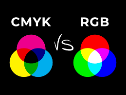

RGB model
RGB-model is een model met de kleuren rood, groen en blauw.
Met het RGB-model kan je elke kleur die je wilt maken.
Alle kleuren hebben een eigen code bestaande uit de basiskleuren
Die code bestaad uit 8 bits. De basiskleuren kunnen tussen de 0 en 255.
Bijvoorbeeld 0 voor rood en blauw en 255 voor groen krijg je groen maar,
het kan ook (23,234,78) is een is een licht groene kleur.
Probeer het aan de rechter kant zelf.
CYM-K model
Het CYM-K model wordt vooral gebruik voor tekst afdrukken van een computer.
Er is alleen een probleem als je cyan-magenta-yellow kleuren gebreukt
je kan namelijk geen zwart of donkergrijs maken. Daarom is de K van key
in het model gezet zodat je nog steeds alle kleuren krijgt.

© ; 2025 school project
clemens.van.der.eng@vlietlandcollege.nl